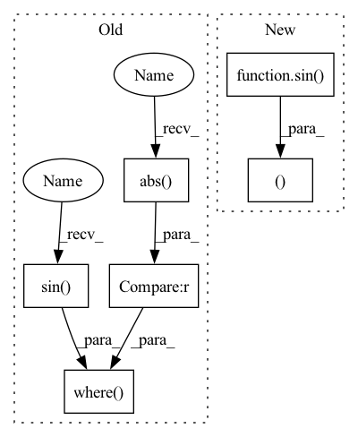

Pattern ID :33411
Before Change
return output
def sinc_inv(x):
usetaylor = (x.abs()<THRES)
texpand = 1+(1/6)*x**2 +(7/360)*x**4
assert not torch.any(torch.isinf(texpand)|torch.isnan(texpand)),"sincinv texpand inf"+torch.any(torch.isinf(texpand))
return torch.where( usetaylor,texpand,x/x.sin())
//// Lie Groups acting on R3
// Hodge star on R3After Change
@taylor(THRES)
def sinc_inv(x, _):
texpand = 1+(1/6)*x**2 +(7/360)*x**4
full = x / sin( x)
assert not torch.any(torch.isinf(texpand)|torch.isnan(texpand)),"sincinv texpand inf"+torch.any(torch.isinf(texpand))
return texpand, full
//// Lie Groups acting on R3
// Hodge star on R3In pattern: SUPERPATTERN
Frequency: 3
Non-data size: 6
Instances Fragment ID: 96183048
Project Name: lucidrains/lie-transformer-pytorch
Commit Name: 2a258dc5e90444b21a260606133e7c5e6d3dcfe5
Time: 2021-02-02
Author: lucidrains@gmail.com
File Name: lie_transformer_pytorch/se3.py
M Class Name: AnonimousClass
N Class Name: AnonimousClass
M Method Name: sinc_inv(2)
N Method Name: sinc_inv(1)
M Parent Class:
N Parent Class:
M File Name: lie_transformer_pytorch/se3.py
N File Name: lie_transformer_pytorch/se3.py
M Start Line: 48
M End Line: 51
N Start Line: 59
N End Line: 63
Before Change
def sinc(x):
sin(x)/x
x2=x*x
usetaylor = (x.abs()<THRES)
return torch.where( usetaylor,1-x2/6*(1-x2/20*(1-x2/42)),x.sin() /x)
def sincc(x):
(1-sinc(x))/x^2
x2=x*xAfter Change
def sinc(x, x2):
sin(x)/x
texpand = 1-x2/6*(1-x2/20*(1-x2/42))
full = sin( x) / x
return texpand, full
@taylor(THRES)
def sincc(x, x2):
(1-sinc(x))/x^2 Fragment ID: 96183047
Project Name: lucidrains/lie-transformer-pytorch
Commit Name: 2a258dc5e90444b21a260606133e7c5e6d3dcfe5
Time: 2021-02-02
Author: lucidrains@gmail.com
File Name: lie_transformer_pytorch/se3.py
M Class Name: AnonimousClass
N Class Name: AnonimousClass
M Method Name: sinc(2)
N Method Name: sinc(1)
M Parent Class:
N Parent Class:
M File Name: lie_transformer_pytorch/se3.py
N File Name: lie_transformer_pytorch/se3.py
M Start Line: 20
M End Line: 22
N Start Line: 30
N End Line: 34
Before Change
def sincc(x):
(1-sinc(x))/x^2
x2=x*x
usetaylor = (x.abs()<THRES)
return torch.where( usetaylor,1/6*(1-x2/20*(1-x2/42*(1-x2/72))),(x-x.sin() )/x**3)
def cosc(x):
(1-cos(x))/x^2
x2 = x*xAfter Change
def sincc(x, x2):
(1-sinc(x))/x^2
texpand = 1/6*(1-x2/20*(1-x2/42*(1-x2/72)))
full = (x-sin( x) ) / x**3
return texpand, full
@taylor(THRES)
def cosc(x, x2):
(1-cos(x))/x^2 Fragment ID: 96183046
Project Name: lucidrains/lie-transformer-pytorch
Commit Name: 2a258dc5e90444b21a260606133e7c5e6d3dcfe5
Time: 2021-02-02
Author: lucidrains@gmail.com
File Name: lie_transformer_pytorch/se3.py
M Class Name: AnonimousClass
N Class Name: AnonimousClass
M Method Name: sincc(2)
N Method Name: sincc(1)
M Parent Class:
N Parent Class:
M File Name: lie_transformer_pytorch/se3.py
N File Name: lie_transformer_pytorch/se3.py
M Start Line: 26
M End Line: 28
N Start Line: 37
N End Line: 41